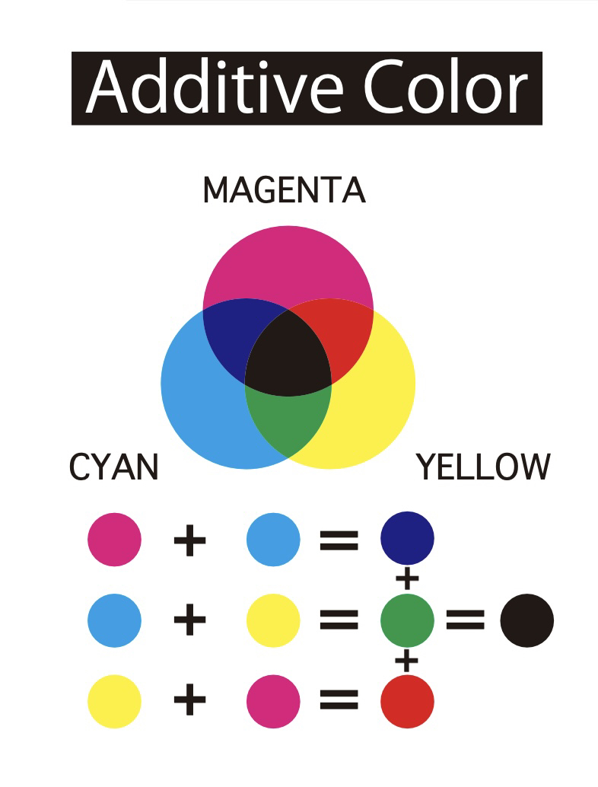

PORT FOLIO
名前：木下颯太
高校の頃にC言語でプログラミングをしながら、
データベースや、マイコン制御など幅広い情報の
分野を学んできました。その経験を活かし、大学
１年生の時に東京ゲームショウにゲームの出展を
しました。
生年月日：2004年10月6日
所属：愛知工業大学 情報科学部情報科学科 メディア情報専攻
趣味：ゲーム、タイピング
スキル：Adobe Illustrator,Photoshop,After Effects Maya2022 Unity
Works

Maya Modeling
Mayaを使い3Dモデリングを行いました。
制作アプリケーション：Maya2022
Logo Design
Illustratorを使い、自然をテーマにしたロゴを制作しました。
制作アプリケーション：Adobe Illustrator2023

Character Design
Illustratorを使い、”情報科学部"をテーマにオリジナルキャラクターを制作しました。
制作アプリケーション：Adobe Illustrator2023

Additive Color
Illustratorを使い、加法混色について分かりやすくまとめました。。
制作アプリケーション：Adobe Illustrator2023
Maya modeling
Mayaを使い、スクラップアートをテーマにし、ワシをモデリングをしました。
制作アプリケーション：Maya2022